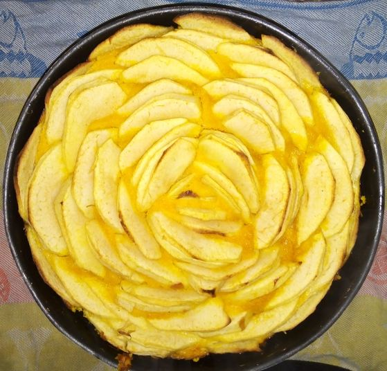

Miassou
2020-10-21
The region I come from is known for its duck/goose-based cooking, not so much for its desserts. And indeed we do not have that much of a sweet tooth in Perigord Noir. But we do have a few desserts. My favourite and maybe the least known of them is the miassou, and I happen to make quite a good one, if i may say so. The name unfortunately refers to a dozen different dishes, ranging from potato pancakes to any cornmeal-based cake, so what follows is a recipe of miassou, as done in my family.
The basis is quite unconventional for a french cake but very seasonal (and as a consequence I tend to cook one every year in Fall): pumpkin, cornmeal and apples.
The idea is to boil the chopped-up pumpkin, mash it and mix in some cornmeal. Separately split 2 to 4 eggs, whiten the yolks with a bit of sugar (brown sugar if possible), and beat the egg whites until ferm. Incorporate both preparations to the pumpkin/cornmeal mix until it is homogenous. Then place the mixture in a buttered dish, and cover with slices of apples. Add a dash of sugar on top of the apples and cook in the oven at 220°C for nearly 45 min.
The result, from above. When cut into slices, it should stand on its own in one piece. If not, then put more cornmeal the next time around :)